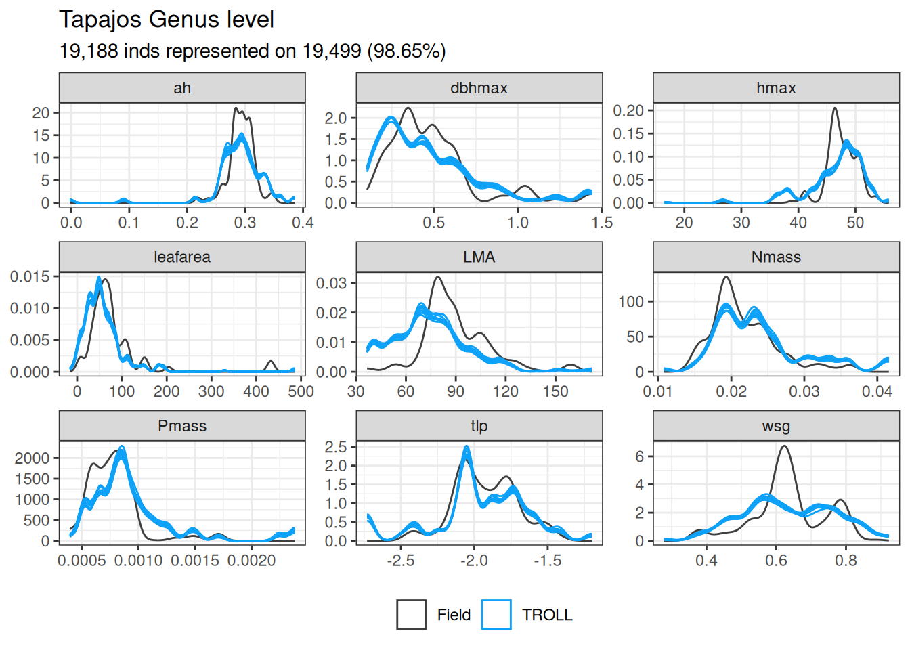

Evaluation of the TROLL version 4 final structure and composition of the forest in relation to field observations and remote sensing at two Amazonian sites.
Structure
The main development of TROLL version 4 is the inclusion of a new explicit modelling of daily water and carbon fluxes as well as a new leaf phenology. We thus focused TROLL version 4 evaluation on fluxes, as forest structure and composition was extensively assessed in Maréchaux and Chave (2017) . However here, we quickly investigate back forest structure and composition in Paracou and Tapajos.
We characterized global forests structure through their distribution of basal area (m2/ha) and logged abundance per 10-cm classes of diameter at breast height (DBH, cm) for trees above 10 cm DBH. We found simulated back the same distributions in Paracou with a small lack of smaller diameters and slight increase in trees with a diameter around 100 cm. But beware of stochasticity that may have resulted in a few big trees surviving in the 16-ha simulations. We found back in Paracou a total basal area of 29 m2/ha against a mean observed of 30 across plots and a total number of 576 individuals simulated per hectare against a mean observed of 655 across plots. In Tapajos, we found very similar distribution but with increased small diameters in simulation and a lack of big trees (above 100cm). We thus overestimated basal area (30 m2/ha against 24 observed) and abundance (598 against 632 observed). However, Tapajos data are based on only 8 very small plots of 0.25ha, which may have resulted in an over-representation of a few big individuals. The resulting quantiles comparisons are very good with a correlation coefficient above 0.93 for all metrics and sites except Tapajos were basal area correlation coefficient was only 0.72.
Evaluation of the size structure estimated by TROLL at the Paracou and Tapajos sites, expressed in terms of abundance and basal area. Confidence intervals on inventory analysis at 95 % are shown with error bars and are based on among plots variations. The confidence on the TROLL values was estimated generating an ensemble of 10 simulations (see methods).
Code
filter(structure, variable %in%c("ba", "abundance")) %>%select(site, dbh_class, variable, m, type) %>%pivot_wider(names_from = type, values_from = m) %>%ungroup() %>%mutate(observed =ifelse(is.na(observed), 0, observed)) %>%mutate(simulated =ifelse(is.na(simulated), 0, simulated)) %>%nest_by(site, variable) %>%mutate(R2 =summary(lm(observed ~0+ simulated, data = data))$r.squared,CC =cor(data$simulated, data$observed),RMSEP =sqrt(mean((data$simulated-data$observed)^2)),RRMSEP =sqrt(mean((data$simulated-data$observed)^2))/mean(data$observed),SD =sd(data$simulated-data$observed),RSD =sd(data$simulated-data$observed)/mean(data$observed)) %>%select(-data) %>% knitr::kable(caption ="Evaluation of abundance and basal area distribution at Paracou and Tapajos.")
Evaluation of abundance and basal area distribution at Paracou and Tapajos.
site
variable
R2
CC
RMSEP
RRMSEP
SD
RSD
Paracou
abundance
0.9983901
0.9992785
10.6559912
0.1923843
10.9664919
0.1979901
Paracou
ba
0.9741509
0.9701353
0.6037491
0.2143171
0.6174190
0.2191696
Tapajos
abundance
0.9875048
0.9942309
37.0014130
1.3287800
37.0423814
1.3302513
Tapajos
ba
0.8529138
0.8242823
0.8433943
0.4519680
0.8543784
0.4578542
Understory
Taking advantage of new inventories of understory in Paracou, we assessed TROLL version 4 ability to simulate understory. We found TROLL to understimate the number of small trees with DBH close to 1cm and overestimate bigger trees with DBH closer to 10. We ewpected this behaviour as TROLL only simulates one tree per square meter. Nonetheless we found back a basal area of 4 m2/ha despite an underestimation of 2,310 individuals per hectare against 3,787, observed.
Evaluation of the size structure estimated by TROLL at the Paracou site with understorey trees, expressed in terms of abundance and basal area. Confidence intervals on inventory analysis at 95 % are shown with error bars and are based on among plots variations. The confidence on the TROLL values was estimated generating an ensemble of 10 simulations (see methods).
Code
filter(understory, variable %in%c("ba", "abundance")) %>%select(site, dbh_class, variable, m, type) %>%pivot_wider(names_from = type, values_from = m) %>%ungroup() %>%mutate(observed =ifelse(is.na(observed), 0, observed)) %>%mutate(simulated =ifelse(is.na(simulated), 0, simulated)) %>%nest_by(site, variable) %>%mutate(R2 =summary(lm(observed ~0+ simulated, data = data))$r.squared,CC =cor(data$simulated, data$observed),RMSEP =sqrt(mean((data$simulated-data$observed)^2)),RRMSEP =sqrt(mean((data$simulated-data$observed)^2))/mean(data$observed),SD =sd(data$simulated-data$observed),RSD =sd(data$simulated-data$observed)/mean(data$observed)) %>%select(-data) %>%na.omit() %>% knitr::kable(caption ="Evaluation of abundance and basal area distribution at Paracou for the understory.")
Evaluation of abundance and basal area distribution at Paracou for the understory.
Evaluation of the size structure estimated by TROLL at the Paracou and Tapajos sites, expressed in terms of abundance and basal area and including understorey trees at Paracou. Confidence intervals on inventory analysis at 95 % are shown with error bars and are based on among plots variations. The confidence on the TROLL values was estimated generating an ensemble of 10 simulations (see methods).
Height
Code
g <-read_tsv("outputs/evaluation_height.tsv") %>%group_by(site, height) %>%summarise(l =quantile(pct, 0.025, na.rm =TRUE), m =quantile(pct, 0.5, na.rm =TRUE), h =quantile(pct, 0.975, na.rm =TRUE)) %>%mutate(type ="TROLL") %>%bind_rows(read_tsv("outputs/hieght_chm.tsv") %>%rename(m = pct) ) %>%filter(height >5) %>%ggplot(aes(height, m, col = type)) +geom_ribbon(aes(ymin = l, ymax = h, fill = type), col =NA, alpha =0.2) +geom_line() +facet_wrap(~ site) +theme_bw() +coord_flip() +ylab("[ % ]") +xlab("Height [ m ]") +scale_color_manual("", values =as.vector(cols[c("obs", "sat", "sim")])) +scale_fill_manual("", values =as.vector(cols[c("obs", "sat", "sim")])) +theme(legend.position ="bottom")ggsave("figures/f02.png", g, dpi =300, width =8, height =5, bg ="white")g
Evaluation of the height structure estimated by TROLL at the Paracou and Tapajos sites. Confidence intervals on inventory analysis at 95% are shown with shaded areas. The confidence on the TROLL values was estimated generating an ensemble of 10 simulations (see methods).
Code
read_tsv("outputs/evaluation_height.tsv") %>%group_by(site, height) %>%summarise(l =quantile(pct, 0.025, na.rm =TRUE), m =quantile(pct, 0.5, na.rm =TRUE), h =quantile(pct, 0.975, na.rm =TRUE)) %>%mutate(type ="TROLL") %>%bind_rows(read_tsv("outputs/hieght_chm.tsv") %>%rename(m = pct) ) %>%filter(height >5) %>%select(site, height, m, type) %>%pivot_wider(names_from = type, values_from = m) %>%rename(simulated = TROLL) %>%gather(type, observed, -site, -height, -simulated) %>%mutate(observed =ifelse(is.na(observed), 0, observed)) %>%mutate(simulated =ifelse(is.na(simulated), 0, simulated)) %>%ungroup() %>%nest_by(site, type) %>%mutate(R2 =summary(lm(observed ~0+ simulated, data = data))$r.squared,CC =cor(data$simulated, data$observed),RMSEP =sqrt(mean((data$simulated-data$observed)^2)),RRMSEP =sqrt(mean((data$simulated-data$observed)^2))/mean(data$observed),SD =sd(data$simulated-data$observed),RSD =sd(data$simulated-data$observed)/mean(data$observed)) %>%select(-data) %>% knitr::kable(caption ="Evaluation of height distribution at Paracou and Tapajos.")
Evaluation of height distribution at Paracou and Tapajos.
site
type
R2
CC
RMSEP
RRMSEP
SD
RSD
Paracou
ALS
0.8752584
0.8782722
0.9949490
0.5240577
1.0043656
0.5290177
Paracou
GEDI
0.9417391
0.9391392
0.6426098
0.3503932
0.6418056
0.3499547
Tapajos
ALS
0.9235757
0.8998711
0.6005382
0.3560319
0.6057538
0.3591240
Tapajos
GEDI
0.9403821
0.9426039
0.5515009
0.3976984
0.4706077
0.3393647
Composition
Species
Observed species rank-abundance curves in Paracou and Tapajos revealed low evenness with a few dominating species even more intense in Tapajos. However, Tapajos data are based on only 8 very small plots of 0.25ha, which may not be representative despite their virtual pooling in two 1-ha plots, and the quality of the species identifications can be lower. Simulated rank-abundance curve in Paracou was similar to the observed one with a correlation coefficient of 0.95 but with higher evenness resulting in underestimation of dominant species abundances and overestimation of rare species abundances. Simulated rank-abundance curve in Tapajos was very similar to the one simulated in Paracou but differed a lot of the one in Tapajos with strong underestimation of dominant species abundances and overestimation of rare species abundances. But once again observation data in Tapajos might be question for species resolution.
Evaluation of the species composition estimated by TROLL at the Paracou and Tapajos sites expressed in terms of species rank-abundance curve. Confidence intervals on inventory analysis at 95 % are shown with error bars and are based on among plots variations. The confidence on the TROLL values was estimated generating an ensemble of 10 simulations (see methods).
Code
compositon %>%select(site, rank, m, type) %>%pivot_wider(names_from = type, values_from = m) %>%ungroup() %>%na.omit() %>%nest_by(site) %>%mutate(R2 =summary(lm(observed ~0+ simulated, data = data))$r.squared,CC =cor(data$simulated, data$observed),RMSEP =sqrt(mean((data$simulated-data$observed)^2)),RRMSEP =sqrt(mean((data$simulated-data$observed)^2))/mean(data$observed),SD =sd(data$simulated-data$observed),RSD =sd(data$simulated-data$observed)/mean(data$observed)) %>%select(-data) %>% knitr::kable(caption ="Evaluation of rank-abundance distribution at Paracou and Tapajos.")
Evaluation of rank-abundance distribution at Paracou and Tapajos.
site
R2
CC
RMSEP
RRMSEP
SD
RSD
Paracou
0.7662883
0.9157731
4.535410
0.9113748
4.462350
0.8966936
Tapajos
0.6607932
0.8911992
4.108032
1.1461637
3.949061
1.1018099
Functional
Simulated functional trait distribution in Paracou and Tapajos matched the ones observed with quantiles correlations above 0.9 for all traits and sites, at th exception of leaf area in Paracou. However due to a poor species resolution in Tapajos we used mean genus values, which may result in an overestimation of assessment in Tapajos. Leaf area differences in Paracou come to the lack of very high leaf area species in the simulations compared to the Paracou plots, however the resulting correlation coefficient might have differed if we would have used log-transformed leaf area). Diving into the observed data, the high leaf area values are due to pioneer species including Cecropia obtusa and sciadophylla, Sterculia speciosa and Perebea guianensis. The three genus are present in the simulations inputs, but seems to lack in the final forest due to either a lack of forest gaps or a lack of survival.
Evaluation of the functional composition estimated by TROLL at the Paracou site expressed in terms of density distribution per trait and site. The analyses have been done at the species level in Paracou.
Code
read_tsv("outputs/functional_composition.tsv") %>%filter(site =="Tapajos") %>%ggplot(aes(trait_value, group = plot)) +geom_density(aes(col ="Observed")) +geom_density(aes(col ="Simulated"),data =filter(troll_traitdist, site =="Tapajos")) +facet_wrap(~ trait, scales ="free") +theme_bw() +ggtitle("Tapajos Genus level", "19,188 inds represented on 19,499 (98.65%)") +theme(axis.title =element_blank(), legend.position ="bottom") +scale_color_discrete("") +scale_color_manual("", values =as.vector(cols[c("obs", "sim")]), labels =c("Field", "TROLL"))

Evaluation of the functional composition estimated by TROLL at the Tapajos site expressed in terms of density distribution per trait and site. The analyses have been done at the genus level in Tapajos.
Evaluation of the functional composition estimated by TROLL at the Paracou and Tapajos sites expressed in terms of density distribution per trait and site. The analyses have been done at the species level in Paracou and the genus level in Tapajos.
Code
all_traits_q %>%filter(trait !="LA", trait !="leafarea", trait !="leafaera") %>%rename(simulated = m_sim, observed = m_obs) %>%select(site, trait, quantile_id, observed, simulated) %>%nest_by(site, trait) %>%mutate(R2 =summary(lm(observed ~0+ simulated, data = data))$r.squared,CC =cor(data$simulated, data$observed),RMSEP =sqrt(mean((data$simulated-data$observed)^2)),RRMSEP =sqrt(mean((data$simulated-data$observed)^2))/mean(data$observed),SD =sd(data$simulated-data$observed),RSD =sd(data$simulated-data$observed)/mean(data$observed)) %>%select(-data) %>% knitr::kable(caption ="Evaluation of functional trait distribution for 100 quantiles at Paracou and Tapajos.")
Evaluation of functional trait distribution for 100 quantiles at Paracou and Tapajos.
site
trait
R2
CC
RMSEP
RRMSEP
SD
RSD
Paracou
LMA
0.9897132
0.9268354
18.0739171
0.1797868
9.7587250
0.0970730
Paracou
Nmass
0.9970910
0.9793965
0.0012290
0.0558906
0.0012343
0.0561334
Paracou
Pmass
0.9912903
0.9749818
0.0001330
0.1804040
0.0000795
0.1077910
Paracou
ah
0.9986979
0.9767724
0.0117722
0.0398452
0.0111790
0.0378376
Paracou
dbhmax
0.9918479
0.9817691
0.0547724
0.1090036
0.0538650
0.1071977
Paracou
hmax
0.9998205
0.9832491
0.6561499
0.0134831
0.6583910
0.0135291
Paracou
tlp
0.9994627
0.9852830
0.0801806
-0.0434285
0.0463786
-0.0251202
Paracou
wsg
0.9970390
0.9659593
0.0484857
0.0782990
0.0381994
0.0616878
Tapajos
LMA
0.9893949
0.9702315
14.1468102
0.1568311
6.8309362
0.0757276
Tapajos
Nmass
0.9954951
0.9872929
0.0025905
0.1190376
0.0019660
0.0903402
Tapajos
Pmass
0.9789817
0.9704334
0.0002509
0.3215513
0.0001944
0.2492055
Tapajos
ah
0.9964029
0.9545884
0.0177189
0.0603945
0.0178011
0.0606748
Tapajos
dbhmax
0.9924070
0.9873591
0.0490304
0.1002132
0.0474962
0.0970774
Tapajos
hmax
0.9927981
0.9239235
4.1327658
0.0868887
3.9184566
0.0823830
Tapajos
tlp
0.9975516
0.9701649
0.1063470
-0.0553207
0.0897201
-0.0466715
Tapajos
wsg
0.9960726
0.9688400
0.0478843
0.0753345
0.0442480
0.0696137
Maréchaux, Isabelle, and Jérôme Chave. 2017. “An Individual-Based Forest Model to Jointly Simulate Carbon and Tree Diversity in Amazonia: Description and Applications.”Ecological Monographs 87 (4): 632–64. https://doi.org/10.1002/ecm.1271.